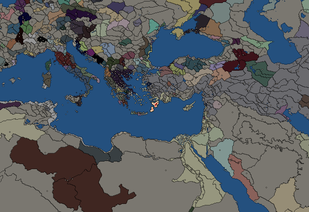
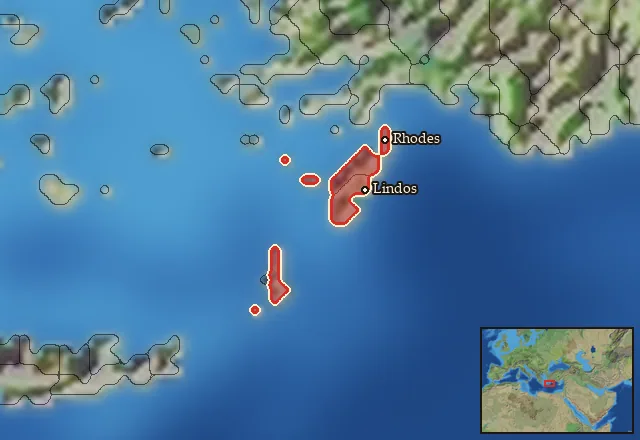

Rhodes


- difficulty Very Difficult
- Greek culture
- believes
 Dorian
Dorian - 2 settlements
- capital Rhodes
- 10,600 manpower
- 4 characters
- 17 faction units
- 434 regional units
The campaign brief
"To thy very self, O Sun, did the people of Dorian Rhodes raise high to heaven this colossus, then, when having laid to rest the brazen wave of war, they crowned their country with the spoils of their foes. Not only over the sea, but on the land, too, did they establish the lovely light of unfettered freedom. For to those who spring from the race of Heracles dominion is a heritage both on land and sea." – The Greek Anthology, 6.171
Sailing from Halikarnassos, our journey takes us along the Carian coast and, taking a turn to the south, we come across the sight of the island of Rhodos. As our eyes catch a glimpse of its northern shores, our gaze is irresistibly fixed on a wondrous figure gleaming in the sun. The Colossus of Rhodes, standing 70 cubits (32m/108ft) high, is the work of Chares of Lindos, who, it is said, after spending the sum he was given by the Rhodians to build it only on the first stages of the work, having miscalculated the expenses, took his own life.
The god of the Sun is the god the Rhodians worship the most. At the end of each summer they celebrate a festival called the Halieia, when chariot racing and contests of music and gymnastics take place. Each festival, the Rhodians would sacrifice a team of four horses by throwing it into the sea, in re-enactment of the myth of Phaethon. The son of Helios, as the story goes, after pleading with his father to lend him his chariot for a day to prove his worth to him, couldn't control the horses, driving the chariot too close to the Earth and burning it in some places, while in others freezing it while being too far in the sky. Zeus, seeing this, struck him down with his thunderbolt, his corpse falling into the river Eridanous.
Rhodes was first inhabited by the Telchines, the children of Thalatta. They were the first to fashion statues of the gods, and some say they were also wizards and could summon clouds and rain and hail at their will. Halia, the sister of the Telchines, bore Poseidon six male children and one daughter, called Rhodos. But the Telchines, perceiving in advance the flood that was going to come, and after Poseidon punished his children for their acts of violence upon the natives, abandoned the island, which was then submerged in sea.
As the gods were apportioning the Earth, Helios was absent, as Pindar tells us, and was thus left without his allotment of land, but after seeing an island rising from the grey sea, he chose that as his divine share. Thus, Helios became enamoured of Rhodos, naming the island after herself and fathered the Heliadai, and the Rhodians honour Helios as the ancestor and founder from whom they were descended. And when the Heliadai attained manhood, they were told by their father that the first people to offer sacrifices to Athena would ever enjoy the presence of the goddess. But the Heliadai, forgetting to put fire beneath the victims, nevertheless laid them on the altars at the time, which is the reason this practice still persists in Rhodes to this day.
Ahh, but as we enter the harbour of the city, passing the golden effigy of the god, we realize such words by Pindar ring true for the observer:
"Their streets bore works of art in the likeness of beings
that lived and moved,
and great was their fame. When one is expert,
even native talent becomes greater."
As we come to the Artisans' Quarter of the city, we come across the workshops of Antonios, the master craftsman and his apprentices, the architect Ardys, whose skill in shaping the landscape around us matches the ancient Telchines, and Ioannes, the master armourer. Truly, the Rhodians have been blessed with skill to surpass other mortals by the Grey-eyed Goddess!
At a later time, it is said, Tlepolemos, the son of Herakles, fleeing from Argos after he had unwittingly slain Likymnios, put ashore at Rhodes together with a few of his people and made his home here. Becoming the king of the island, he portioned out the land in equal allotments among the tribes, founding the cities which still bear the names he gave them: Lindos, Ialysos and Kameiros. He then set out along with other kings to Troy, where he met his ultimate end by the hand of Sarpedon.
The present metropolis of the island was constructed at the time of the Peloponnesian War by Hippodamos of Miletos, after the three cities agreed to establish a common capital. And truly, this city is so far superior to all others in harbours and roads and walls and improvements in general that I am unable to speak of any other city as equal to it, much less superior. It is also remarkable for its good order, and for its careful attention to the administration of affairs of state in general. However, their rule is not democratic. Still, they wish to take care of their multitude of poor people, supplying them with provisions, and the needy are supported by the well-to-do, by a certain ancestral custom, so that at the same time the poor man receives his sustenance and the city does not run short of useful men, and in particular for the manning of the fleets.
Walking the streets, we can also marvel at the paintings of Protogenes, the Ialysos, of which it was said that it had been captured by Demetrios in his siege of the city, and that the Rhodians begged him not to destroy the work, whereupon he replied that he would rather burn the likenesses of his father than so great a labour of art. For we are told that it took Protogenes seven years to complete the painting, and that even the great Apelles said he was so smitten by it that his voice actually failed him, and that when at last he had recovered it, he cried 'Great is the toil and astonishing the work!'
With such labour and patience, the Rhodians approach diplomacy as well, for they are known as the arbiters between the potentates of the Makedones – the Antigonidai in Macedon and Greece; the Seleukidai in Asia; and the Ptolemaioi in Egypt – who now fight over the remnants of Alexander's Empire. It is also how they keep their freedom and autonomy, for it is as Aisopos tells us in one of his fables:
"Cultivate gentleness, my son; you will get results oftener by persuasion than by the use of force."
Perhaps with patience and Helios' goodwill, Rhodes can establish its own empire under the Sun...
Starting settlements
Rhodes begins with 2 settlements and 10,600 manpower.
| Settlement | Region | Size | Manpower | Already built | Settlement | Region | Size | Manpower | Already built |
|---|---|---|---|---|---|---|---|---|---|
| Rhodes (capital) | Rhodos | large city | 8,600 | 13 buildings | Lindos | Notios Rhodos | town | 2,000 | 6 buildings |
What is already built in each settlement
Rhodes, in Rhodos: Pro-Consul's Palace, Stone Wall, Homeland, Region Information Scroll, Roads, Forum, Basic Armoury, Odeon (Leisure), Basin Irrigation (Crops), Dockyard, State Mint (Civic), Large Temple, Large Glass Reworking Shop (Urban)
Lindos, in Notios Rhodos: Governor's House, Homeland, Region Information Scroll, Local Barter, Trade Port, Grape Orchards (Rural)
Starting diplomacy
Allied with (1):  Sinope
Sinope
Trade agreements with (1):  Sinope
Sinope
At peace with every other faction.
Like every faction, it is also at war with the  Free Peoples, who hold every settlement no faction does.
Free Peoples, who hold every settlement no faction does.
Homeland
Rhodes's homeland is 2 regions. Only there can it install the Homeland government (more on homelands).

Starting characters
| Name | Role | Age | Name | Role | Age | Name | Role | Age | Name | Role | Age |
|---|---|---|---|---|---|---|---|---|---|---|---|
| Agathostratos | General | 25 | Philiskos | General | 35 | Agathokles | General | 60 | Tereus | Admiral | 25 |
Faction mechanics
From the game's own guide. See also the other game guides.
Special Mechanics
Rhodes has a mercenary centre in the capital, check its Region Information Building for more details.
Military reforms
Rhodes has two reforms.
Rhodian reforms 1 requirements: Own 4 minor cities
Unlocks: Thureophoroi
Rhodian reforms 2 requirements: Have at least 1 huge city.
Unlocks: Aspidophoroi
Reforms
For every faction: Military innovations have arrived!, Second wave of military innovations have arrived!.
Units you can recruit
The same as in the main campaign.